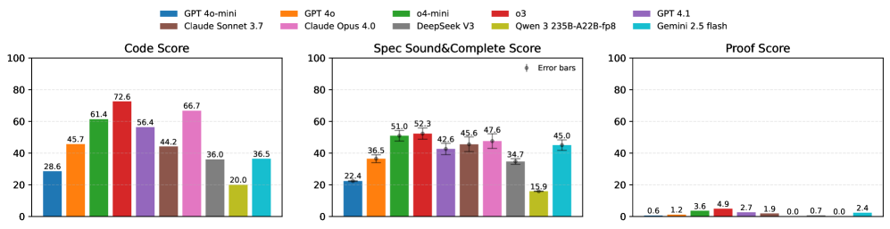

Provides VERINA, a benchmark of 189 curated Lean coding tasks evaluating LLM code, specification, and proof generation.
Abstract
Large language models (LLMs) are increasingly integrated in software development, but ensuring correctness in LLM-generated code remains challenging and often requires costly manual review. Verifiable code generation – jointly generating code, specifications, and proofs of code-specification alignment – offers a promising path to address this limitation and further unleash LLMs' benefits in coding. Yet, there exists a significant gap in evaluation: current benchmarks often focus on only individual components rather than providing a holistic evaluation framework of all tasks. In this paper, we introduce VERINA (Verifiable Code Generation Arena), a high-quality benchmark enabling a comprehensive and modular evaluation of code, specification, and proof generation as well as their compositions. VERINA consists of 189 manually curated coding tasks in Lean, with detailed problem descriptions, reference implementations, formal specifications, and extensive test suites. Our extensive evaluation of state-of-the-art LLMs reveals significant challenges in verifiable code generation, especially in proof generation, underscoring the need for improving LLM-based theorem provers in verification domains. The best model, OpenAI o3, achieves a 72.6% code correctness rate, 52.3% for specification soundness and completeness, and a mere 4.9% proof success rate (based on one trial per task). We hope VERINA will catalyze progress in verifiable code generation by providing a rigorous and comprehensive benchmark. We release our dataset on https://huggingface.co/datasets/sunblaze-ucb/verina and our evaluation code on https://github.com/sunblaze-ucb/verina.
Problem
Ensuring correctness of LLM-generated code remains challenging and current benchmarks focus on individual components rather than providing holistic evaluation of verifiable code generation (code, specification, and proof generation together).
Approach
VERINA (Verifiable Code Generation Arena) is a benchmark of 189 manually curated coding tasks in Lean with problem descriptions, reference implementations, formal specifications, and test suites. It enables modular evaluation of code generation, specification generation, and proof generation individually and in composition. The evaluation framework supports specification-guided code generation, specification inference from code, and end-to-end verifiable code generation.
The best model (OpenAI o3) achieves 72.6% code correctness, 52.3% specification soundness and completeness, and only 4.9% proof success rate based on one trial per task. These results reveal that proof generation remains the primary bottleneck in verifiable code generation.

Figure 5: pass@ 1 performance of LLMs on Verina ’s three foundational tasks.